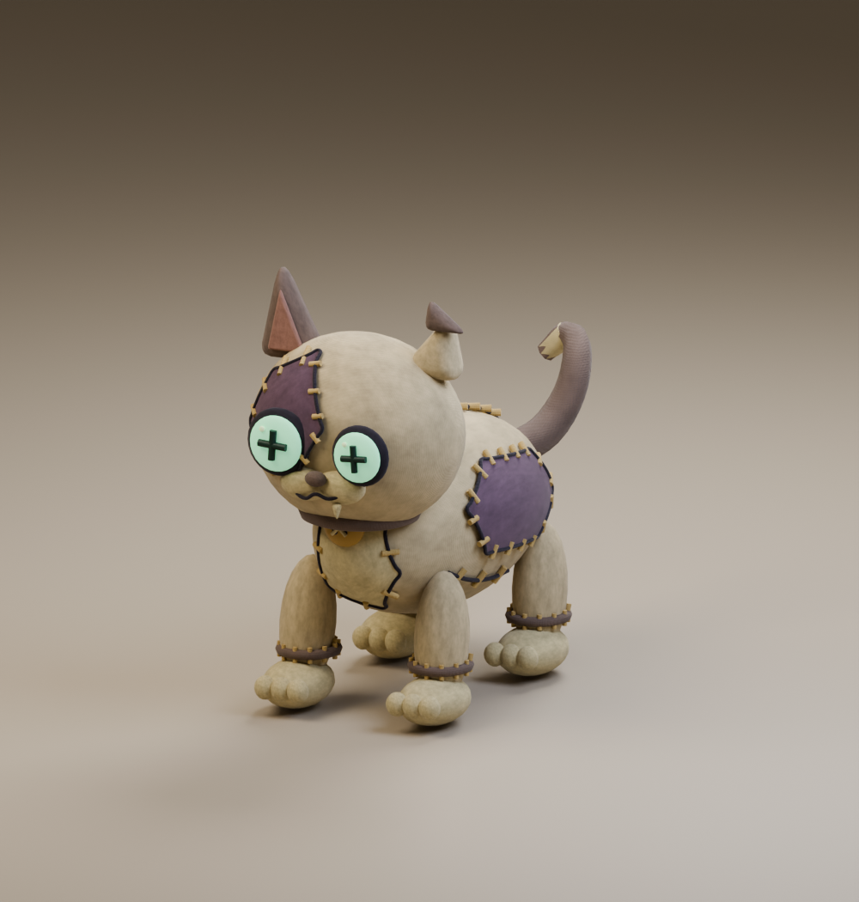
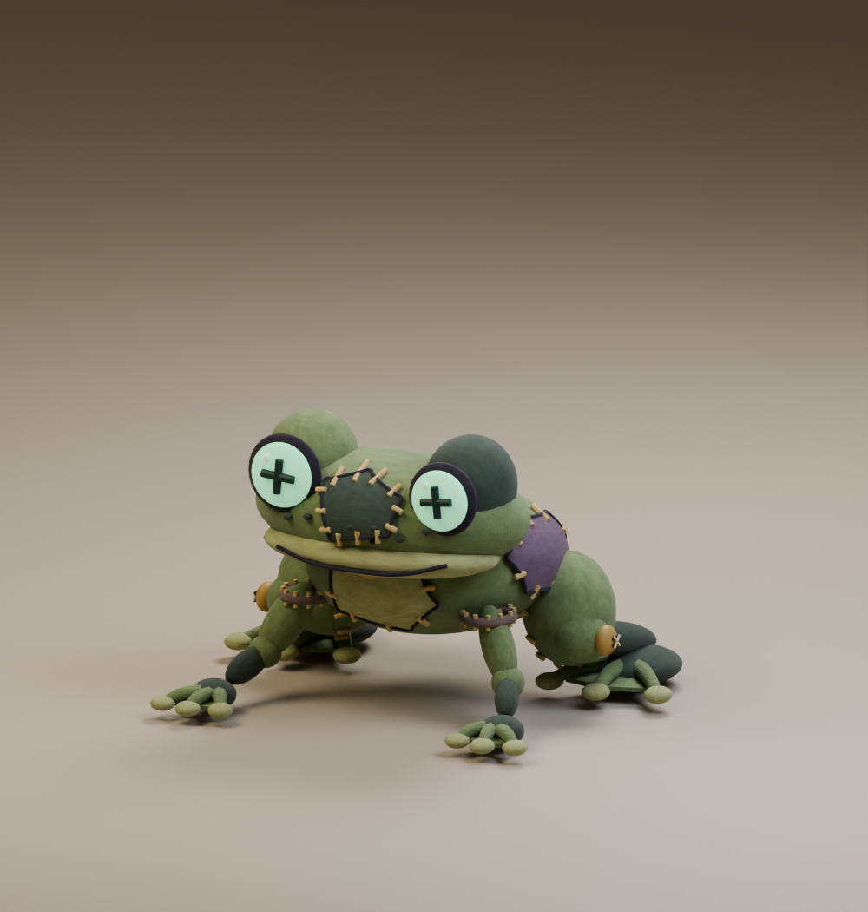
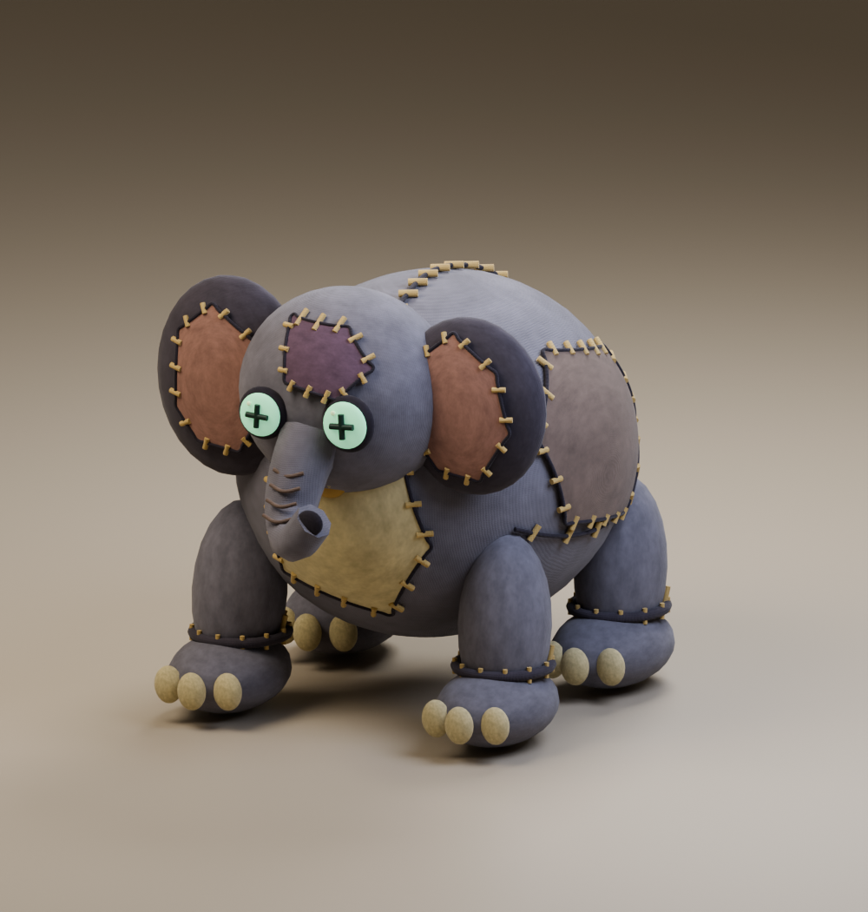

STITCHYARD / ZÁHROBNÍ DÍLNA / REACTIONS 01
Sešíci mají svou hlavu.
Čtyři chapadla naráz ztuhnou. Křídla nespokojeně zašustí. Jedna tlapka řekne „teď už stačí“. Šest nových reakcí rozšiřuje jejich povahy od zvědavosti přes zmatení až po nelibost.
Původní zvířátka
Kočka, žába a slon už existují jako kompletní nezkombinované modely. Mají stejný kanonický sešívaný vzhled jako ostatní Sešíci; každý je složený z dílů jediného druhu.

ZÁKLADNÍ DRUH · STATICKÝ MODELKočka
Protáhlé kočičí tělo, čtyři tlapky a zahnutý ocásek. Všechny díly patří kočce.
Model GLB · FBX

ZÁKLADNÍ DRUH · STATICKÝ MODELŽába
Nízký žabí trup, drobné přední nožky a silné zadní nohy s dlouhými prsty.
Model GLB · FBX

ZÁKLADNÍ DRUH · STATICKÝ MODELSlon
Sloní hlava s chobotem, velký trup a čtyři sloní tlapky s opravenými nehty.
Model GLB · FBX
Co už máme: tyto tři upravitelné modely, náhledy a exporty GLB/FBX. Zatím nemají kostru ani animační klipy. Chobotnice, pavouk, šnek, včela, netopýr a krab jsou v současné sadě zastoupeni díly v hybridech; jejich kompletní základní podoby ještě vytvořené nejsou.
Kombinovaní Sešíci a jejich reakce
Nové reakce: 3 s / 24 fps. Náhledy pohlazení a pamlsku: 12 fps. Vše bez zvuku.
Chobotnicopavouk
LeknutíDvakrát zavrtí hlavou, napne všechna čtyři chapadla do vějíře, chvíli ztuhne a zase je stočí.
Stáhnout GIF · MP4
Model se všemi 7 klipy
GLB · FBX
Šnekovčela
Ostražitá zvědavostPřikrčí se, schová bradu, opatrně vykoukne na jednu i druhou stranu a krátce zavibruje křídly.
Stáhnout GIF · MP4
Model se všemi 7 klipy
GLB · FBX
Netopýrokrab
NelibostUcouvne hlavou, rázně protřepe obě křídla, přitáhne klepeta a otočí tvář stranou.
Stáhnout GIF · MP4
Model se všemi 7 klipy
GLB · FBX
Kočkopavouk
Jemné odmítnutíOdvrátí tvář, zvedne jednu tlapku jako malé stop a cukne ocáskem; pak se vrátí do klidu.
Stáhnout GIF · MP4
Model se všemi 7 klipy
GLB · FBX
Žabokrab
ZmateníNakloní hlavu na obě strany, bezradně nadzvedne klepeta a chvíli vyčkává.
Stáhnout GIF · MP4
Model se všemi 7 klipy
GLB · FBX
Slonošnek
Překvapení a úlevaS opožděným nádechem zvedne hlavu, krátce kýchne chobotem a rozpačitě se oklepe.
Stáhnout GIF · MP4
Model se všemi 7 klipy
GLB · FBX
Co Sešík právě říká
Reakce vybírá konkrétní událost a povaha postavy. V tabulce jsou navržené spouštěče a nejkratší odstup před zopakováním, které můžeme při hraní doladit.
Konfigurace mapování (JSON)
Malá reakce, jasný význam. Běžné pohlazení spouští Pet, přijatý pamlsek Treat a velká oslava Joy. Nový React zachytí konkrétní překvapení nebo rozpoložení. Přehrává se jednou, neblokuje boj a po odeznění se postava vrací do klidu.
Všech šest Sešíků má nyní sedm klipů — celkem 42 animací. Opravená křídla i předchozí animace jsou zachované v aktuálních exportech.
Mapování je připravený návrh; herní události, zvuky a ověření v Roblox Studiu ještě nejsou zapojené.